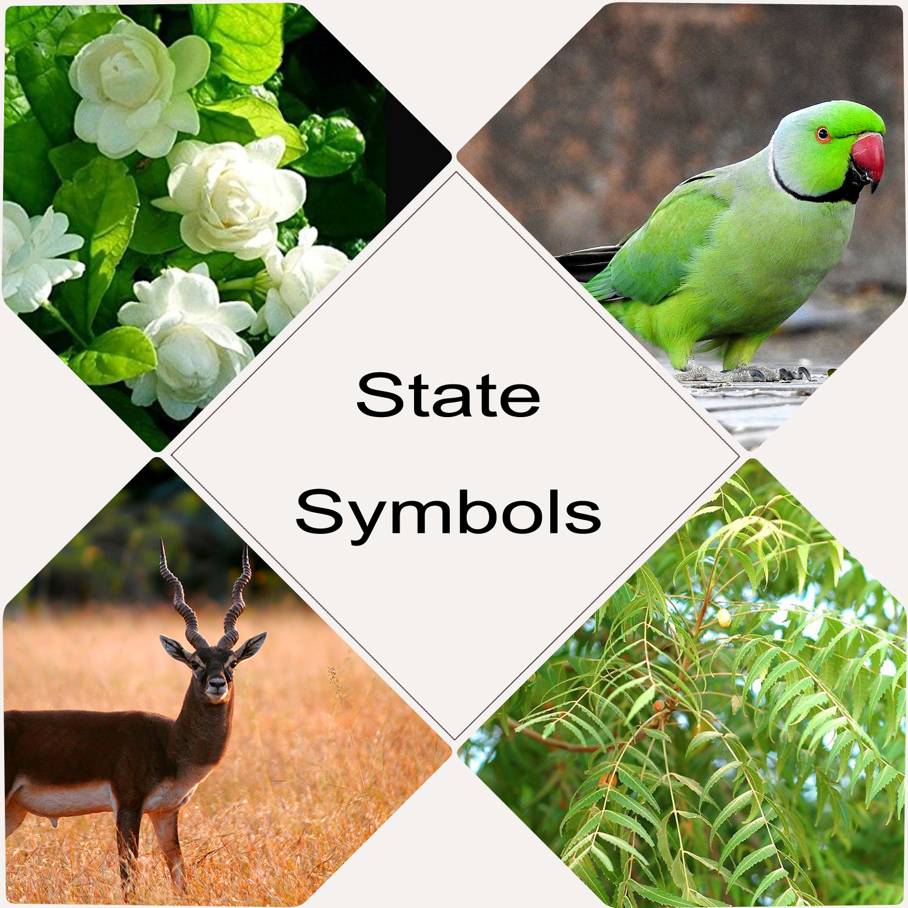

- The Essence of Incredible India

Andhra Pradesh is a state bordering India’s southeastern coast.
Its official and the widely spoken language is Telugu.
Amaravati is the proposed riverfront capital city of the Indian state of Andhra Pradesh.
The new capital is named after the historic site of Amaravathi, known as a centre of Buddhist culture that flourished from 400 BC to 1100 AD.
It is located on the southern banks of the River Krishna in Guntur and Krishna districts.
The foundation stone of the planned city was laid at Uddandarayunipalem village of Guntur district by Prime Minister Narendra Modi on 22 October 2015.
The cities of Guntur and Vijayawada are the major suburbs of the city.
Facts About Andhra Pradesh
- The forest in the state can be broadly divided into four major biotic provinces.
- The vegetation found in the state is large of dry deciduous types with a mixture of teak, Terminalia, Dalbergia, Pterocarpus, Anogeissus, etc.
- The state possesses some rare and endemic plants like Cycas beddomei, Pterocarpus santalinus, Terminalia pallida, Syzygium alternifolium, Shorea talura, Shorea tumburgia, Psilotum nudum, etc.
- The diversity of fauna includes tigers, panthers, hyenas, black bucks, cheetals, sambars, sea turtles and a number of birds and reptiles.
- The estuaries of river Godavari and Krishna support rich mangrove forests with fishing cats and otters as keystone species.
- The Minister of Tourism and Culture has issued a declaration of the Telugu language as a Classical Language.
- The famous Ongole Bull looks similar to Nandi, the vehicle of Lord Shiva. It’s said all the stone sculptures of Nandi in all temples are modelled after the Ongole Bull.
- Satish Dhawan Space Centre, located on the banks of Sriharikota in the Nellore District is one of the main attractions of the state.
- Telugu, the official language of Andhra Pradesh, was described by Englishmen as the”Italian of the East ” for its sweetness.
State Symbols
| State animal | Blackbuck |  |
| State bird | Rose-ringed parakeet | |
| State flower | Jasmine | |
| State tree | Neem |
- Coringa WLS
- Sri Venkateswara National Park
- Namdapha National Park
- Pulicat Lake WLS
- Mrugavani National Park
- Nellapattu WLS
- Rajiv Gandhi (Nagarjuna Sagar-Srisailam) WLS
- Rajiv Gandhi National Park
- Mouling National Park
- Rollapadu WLS
- Kolleru WLS
- Mahavir Harina Vanasthali National Park
- Kawal WLS
Wildlife Sanctuaries
- Sri kalahasthi temple in Chittoor district
- Mallikarjuna Swamy temple in srisailam of Kurnool district
- Kanaka Durga temple in the city of Vijayawada
- Penchalakona Lakshmi Narasimha Swami Temple in Nellore district
- Tirumala Venkateswara temple in the town of Tirupati in Chittoor district